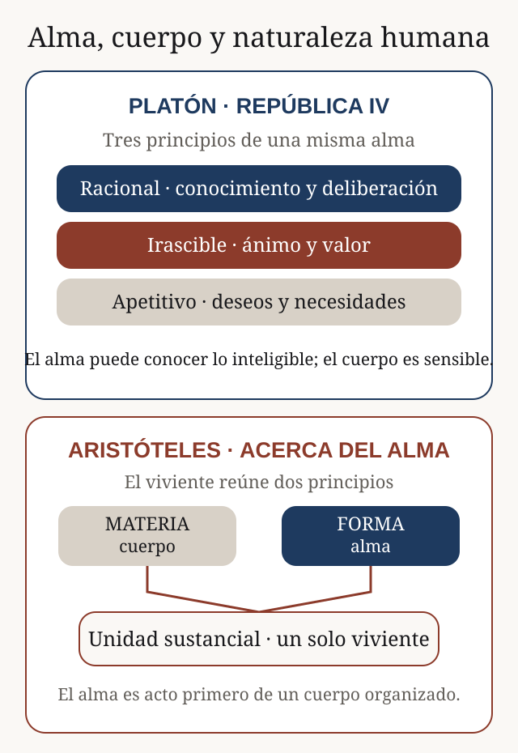

4 min de lectura
Platón y Aristóteles: dos concepciones de la naturaleza humana
Compara el alma racional de Platón y la unidad hilemórfica de Aristóteles para examinar la relación entre cuerpo, conocimiento y vida humana.

Platón distingue tres principios del alma; Aristóteles explica al viviente como unidad de materia y forma.
Platón y Aristóteles: video complementario
Temas del ensayo
Platón · Aristóteles · naturaleza humana · persona humana
Introducción
La antropología clásica pregunta qué capacidades permiten al ser humano conocer, elegir y desarrollar una vida buena. Platón y Aristóteles conceden a la razón un papel central, aunque difieren acerca de la relación entre alma y cuerpo y de la vía del conocimiento.
Ambas teorías atribuyen a la vida humana una naturaleza y unos fines propios. La libertad moral se ejerce mediante la deliberación, el gobierno de los deseos y la elección de acciones que responden a razones verdaderas y justas.
El alma en Platón
Platón distingue el ámbito sensible del inteligible. Las cosas sensibles cambian, mientras que las realidades conocidas por la razón ofrecen un objeto estable. En el Fedón, Sócrates sostiene que el alma es más afín a lo inteligible y el cuerpo a lo visible y compuesto (Platón, 1986, Fedón 79a–80b). La distinción explica por qué el conocimiento no puede depender exclusivamente de los sentidos.
El alma se relaciona con el conocimiento mediante la reminiscencia o anámnesis. En el Fedón, Sócrates sostiene que reconocer la igualdad en las cosas sensibles presupone captar una medida inteligible que esas cosas nunca realizan por completo (Platón, 1986, Fedón 72e–77a). Aprender consiste, según este argumento, en recordar verdades que el alma puede reconocer a partir de la experiencia.
En el libro IV de la República, Platón distingue tres principios del alma. El racional busca conocer y deliberar; el irascible sostiene el valor y se indigna ante la injusticia; el apetitivo reclama satisfacción. La justicia personal requiere que la razón gobierne con el apoyo del ánimo (Platón, 1988, República, lib. IV, 436b–441c).
La tripartición describe tensiones de una sola alma y permite definir la justicia como el ejercicio de la función propia de cada principio. La razón dirige la vida psíquica y educa los afectos para que colaboren con sus decisiones.
La unidad sustancial en Aristóteles
Aristóteles también busca explicar lo inteligible, aunque sitúa la forma en la sustancia concreta. Materia y forma son principios de un mismo compuesto: la materia puede recibir determinación y la forma constituye al viviente como el tipo de ser que es. Aristóteles define el alma como acto primero de un cuerpo natural organizado para la vida (Aristóteles, 1978, Acerca del alma 412a19–28). El alma es principio de las capacidades de nutrición, percepción y pensamiento.
Las facultades vegetativa y sensitiva forman parte de la vida corporal; la facultad racional añade la deliberación y el juicio universal. Aristóteles distingue capacidades y funciones, pero las atribuye a un solo viviente. En el ser humano, la razón integra la nutrición y la percepción en una actividad capaz de conocer fines y elegir medios.
El hilemorfismo explica la percepción como una relación entre el viviente y su objeto, mediada por las capacidades sensibles. El pensamiento racional permite conocer formas universales y juzgar qué es verdadero o conveniente.
Aristóteles distingue el intelecto que hace inteligibles las formas y aquel que puede recibirlas (Aristóteles, 1978, Acerca del alma 430a10–25). El pasaje ha generado interpretaciones distintas sobre la relación entre intelecto y vida individual. Conviene no convertir esa dificultad textual en una afirmación simple sobre la inmortalidad personal.
Alcance histórico de la antropología clásica
Para Platón, la justicia del alma depende de que la razón conozca el bien y dirija los deseos hacia él. En Aristóteles, las capacidades racionales pertenecen a un viviente cuya forma es el alma. Ambas teorías explican por qué conocer y actuar bien son posibilidades propias de la naturaleza humana.
Platón y Aristóteles no formularon la noción moderna de «dignidad inviolable» con su sentido jurídico actual. Sus concepciones del alma racional y de la unidad entre alma y cuerpo aportaron fundamentos metafísicos que la tradición cristiana y humanista posterior desarrolló al pensar la dignidad de la persona.
Las concepciones difieren al explicar la relación entre alma y cuerpo. Para Platón, el alma puede conocer realidades inteligibles; para Aristóteles, es la forma sustancial del cuerpo vivo. Esta diferencia delimita los alcances y las dificultades de cada antropología.
La vida humana también se desarrolla en comunidad. Las personas aprenden y adquieren virtudes en relación con otras; la razón permite evaluar las instituciones con criterios de verdad y justicia. Así, la pregunta por la naturaleza humana conduce a examinar las condiciones de una vida compartida.
Referencias
Aristóteles. (1978). Acerca del alma (T. Calvo Martínez, Trad.). Gredos.
Platón. (1986). Diálogos III: Fedón, Banquete, Fedro (C. García Gual, M. Martínez Hernández y E. Lledó Íñigo, Trads.). Gredos.
Platón. (1988). República (C. Eggers Lan, Trad.). Gredos.
Cómo citar
Equipo de Filosofía Clásica. (2026). Platón y Aristóteles: dos concepciones de la naturaleza humana. Aragón Scholé. https://oregcore-ui.github.io/aragon-schole/articulos/platon-y-aristoteles-dos-concepciones-de-la-naturaleza-humana/
Equipo autor
Equipo de Filosofía Clásica
- Victor Manuel Oregon Gomez
- Ayelen Castro Sarmiento
- Naomi Verónica Castro Mayoral
- Gema Daniela Martínez Hernández
- Camila Gabriela Martínez Celedonio